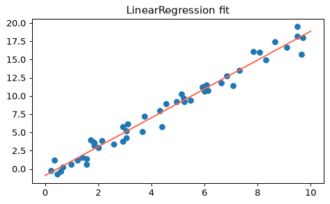

- Handbook 5.01 What Is Machine Learning?
- Handbook 5.02 Introducing Scikit-Learn
機械学習とは何か
機械学習は、データから規則（モデル）を見つけ出し、新しいデータに当てはめる技術です。人が「if文」で規則を書く代わりに、データに規則を学ばせます。大きく2種類に分かれます。
- 教師あり学習：「正解（ラベル）」つきのデータで学ぶ。正解がカテゴリなら分類、連続した数値なら回帰。
- 教師なし学習：正解なしで、データの構造そのものを探す。例：クラスタリング（グループ分け）、次元削減。
たとえば「身長から体重を予測する」のは回帰、「メールが迷惑メールかどうか」は分類です。まず小さなデータで確かめましょう。
heights = np.array([150, 160, 170, 180]) # 入力 weights = np.array([50, 56, 65, 72]) # 正解（連続値＝回帰） spam = np.array([0, 1, 1, 0]) # 正解（カテゴリ＝分類） print(heights.shape, weights.dtype, spam.dtype)
正解が数値の量なら回帰、どのグループかなら分類。正解が無いなら教師なし。
正解が [3.2, 1.5, 2.8] のような連続値のとき、これは分類・回帰のどちら？変数 kind に英語（"classification" か "regression"）で入れてください。
kind = "regression"
連続した数値を予測するので回帰です。
データの形：特徴量行列とターゲット
scikit-learnでは、データを特徴量行列 X（行＝サンプル、列＝特徴量）と、ターゲット y（正解の配列）に分けて渡します。Xは必ず2次元（[n_samples, n_features]）です。
from sklearn.datasets import load_iris iris = load_iris(as_frame=True) df = iris.frame df.head()
アヤメ（iris）の花のデータです。4つの測定値が特徴量、targetが品種（0,1,2）です。
X = iris.data # 特徴量行列（DataFrameでもOK） y = iris.target # ターゲット print(X.shape) print(y.shape) print(list(X.columns))
Xは「表」（行がサンプル、列が特徴量）、yは「正解の1列」。この約束がすべての出発点です。
(n, 1)の2次元にします（x.reshape(-1, 1)）。1次元のままだとエラーになります。1次元配列 x を、特徴量行列として使える (n, 1) の形に変えて X に入れてください。
X = x.reshape(-1, 1)
reshape(-1, 1) で縦1列の2次元配列になります。
Estimator API：5つの手順
scikit-learnの強みは、どのモデルでも使い方が同じことです。
- モデルのクラスを選ぶ（
import） - ハイパーパラメータを決めてインスタンスを作る
- データをX, y に整える
fit()で学習predict()で予測
rng = np.random.RandomState(42) x = 10 * rng.rand(50) y = 2 * x - 1 + rng.randn(50) # 傾き2、切片-1のデータにノイズ
from sklearn.linear_model import LinearRegression # 手順1 model = LinearRegression(fit_intercept=True) # 手順2 X = x.reshape(-1, 1) # 手順3 model.fit(X, y) # 手順4 print(model.coef_, model.intercept_)
末尾が_のもの（coef_など）は、学習の結果できた値です。
xfit = np.linspace(0, 10, 100) yfit = model.predict(xfit.reshape(-1, 1)) # 手順5 plt.scatter(x, y) plt.plot(xfit, yfit, color='tomato') plt.title('LinearRegression fit')

fitで覚えさせ、predictで答えさせる。この2つはほぼ全モデル共通です。
学習済みの model で、x = 5 のときの予測値（配列）を pred に入れてください。
pred = model.predict([[5]])
predictの入力も2次元で渡します。
例：アヤメの分類
モデルは、学習に使っていないデータで評価します。そこで、データを学習用とテスト用に分けます（train_test_split）。分類モデルとして、ここでは単純なガウシアン・ナイーブベイズを使います（中身は今は気にしなくてOK）。
from sklearn.model_selection import train_test_split from sklearn.naive_bayes import GaussianNB from sklearn.metrics import accuracy_score Xtrain, Xtest, ytrain, ytest = train_test_split(iris.data, iris.target, random_state=1) model = GaussianNB() model.fit(Xtrain, ytrain) y_pred = model.predict(Xtest) print(accuracy_score(ytest, y_pred))
約97%が当たりました。random_stateを固定すると、分け方が毎回同じになり結果を再現できます。
print(Xtrain.shape, Xtest.shape) print(y_pred[:10]) print(ytest.values[:10])
正解率（accuracy）は「当たった数 ÷ 全体の数」。テスト用データで測るのがコツです。
y_true と y_hat の正解率を acc に入れてください。
acc = accuracy_score(y_true, y_hat)
4つ中3つ一致なので0.75です。